L’ouverture espagnole, aussi appelée Ruy López, commence par 1. e4 e5 2. Cf3 Cc6 3. Fb5. Le fou vise le cavalier c6, qui défend le pion e5. L’idée est de maintenir une pression sur le centre tout en développant les pièces et en préparant le roque.
- Avec les Blancs
- 1. e4 e5 2. Cf3 Cc6 3. Fb5
- Repère ECO : C60
Vous connaissez peut-être l’Italienne et son fou en c4. Dans l’Espagnole, ce même fou choisit b5 : il s’intéresse au défenseur d’e5. C’est l’occasion de comprendre qu’une pièce peut contribuer à la lutte centrale sans attaquer directement un pion.
Elle peut vous plaire si vous aimez développer vos pièces avant de clarifier le centre. Pour débuter, quelques repères suffisent ; les nombreuses variantes de l’Espagnole ne sont pas à apprendre d’un seul coup.
À retenir avant de jouer
- Votre objectif
- Maintenir une pression sur le cavalier c6 et préparer le développement autour du centre.
- La décision au centre
- Décider quand jouer d4 et si l’échange Fxc6 améliore vraiment votre position.
- Le point de vigilance
- Après Fxc6, le pion e5 n’est pas forcément gagné : une attaque double de dame peut récupérer e4.
Sommaire : choisir une partie du guide
Sur l’échiquier
Les premiers coups, un à un
Dans la notation française, C = cavalier, F = fou, D = dame et O-O = petit roque. T = tour et R = roi. Le signe x indique une capture, + un échec et # un mat. Les points de suspension indiquent un coup des Noirs.
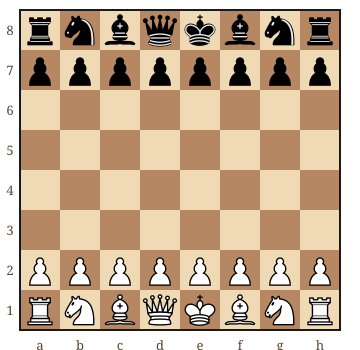
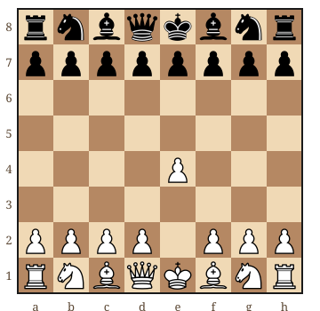
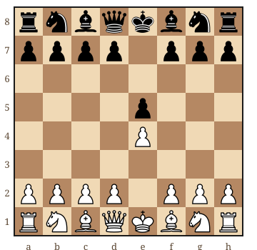
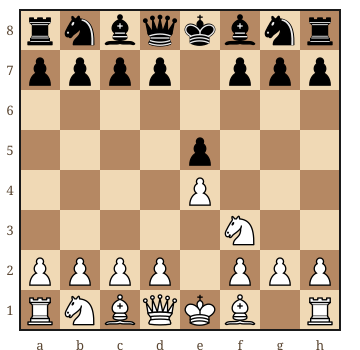
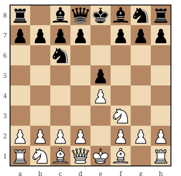
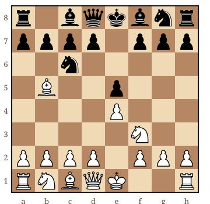
Ce que chaque coup accomplit
- 1. e4
Le pion blanc occupe e4 et libère le fou f1.
- 1…e5
Les Noirs occupent e5 : les deux camps ont un point d’appui central.
- 2. Cf3
Le cavalier f3 se développe et attaque e5.
- 2…Cc6
Le cavalier c6 protège e5 tout en se développant.
- 3. Fb5
Le fou attaque le cavalier c6. Il exerce une pression indirecte sur le centre, sans gagner automatiquement de matériel.
Votre fil conducteur
Trois idées à garder en tête
Conserver la tension
Vous n’avez pas besoin d’échanger immédiatement le fou contre le cavalier. La pression sur c6 peut être maintenue pendant que vous terminez le développement.
Garder le roi en sécurité
Le départ du cavalier g1 et du fou f1 permet de préparer le petit roque. Vérifiez toujours que les cases traversées sont sûres.
Compter avant de prendre e5
Après un échange sur c6, les Noirs peuvent parfois récupérer un pion grâce à une attaque de dame. Ne concluez pas « le défenseur a disparu, donc e5 est gratuit » sans calculer.
Un exemple court pour comprendre le plan
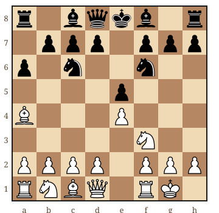
Dans cet exemple, les Noirs questionnent le fou avec …a6. Les Blancs le conservent par Fa4 puis roquent après …Cf6. Le pion e4 est attaqué : le roque n’est pas une permission d’ignorer le centre. La suite demande encore de regarder les menaces.
Deux réponses noires à reconnaître
3…a6 : Demander au fou de choisir
Le pion attaque b5. Vous pouvez conserver le fou en reculant ou envisager un échange ; les deux décisions changent la position.
3…Cf6 : La défense berlinoise
Les Noirs développent leur cavalier et attaquent e4. Identifiez cette menace avant de continuer votre propre plan.
Ce sont des repères pour vous orienter. Vous n’avez pas besoin de mémoriser leurs ramifications pour commencer à jouer.
Comprendre ce qui se joue
Lire le centre et la structure de pions
Le fou b5 ne prend pas le pion e5 pour cible directe : il attaque le cavalier c6 qui le défend. Cette distinction explique le caractère de l’Espagnole. Vous pouvez maintenir la pression sans échanger immédiatement, pendant que les autres pièces sortent. Le pion d7 se trouve encore sur la diagonale du fou vers e8 : au troisième coup, le cavalier c6 n’est pas cloué au roi.
Si vous échangez Fxc6 et que les Noirs reprennent avec le pion d, ils obtiennent des pions en c6 et c7, mais conservent leurs deux fous. Les pions doublés ne représentent pas à eux seuls une victoire : les lignes ouvertes et l’activité des fous sont une compensation à examiner. Le fou c8 peut notamment trouver plus facilement une diagonale après le départ du pion d.
Le pion blanc e4 reste un point de contact tactique. Enlever le cavalier c6 ne permet pas de conclure que Cxe5 gagne un pion sans contrepartie. La dame noire peut disposer de sorties qui créent plusieurs menaces à la fois. C’est précisément une ouverture où la pression stratégique doit être accompagnée d’un petit calcul avant chaque capture.
Quelles cases chercher pour vos pièces ?
Ces placements sont des repères à vérifier dans la position, pas des coups à jouer sans regarder l’adversaire.
- Fou f1b5, puis une retraite ou un échange
- Après …a6, Fa4 conserve le fou ; Fxc6 modifie la structure. Choisissez selon ce que vous souhaitez obtenir, sans confondre les deux plans.
- Cavalier g1f3
- Il attaque e5 mais participe aussi à la sécurité centrale. Un saut vers e5 doit tenir compte des réponses de la dame noire.
- Cavalier b1c3 ou d2 selon le centre
- Ne choisissez pas Cc3 si votre plan immédiat a besoin du pion en c3 sans comprendre ce que cela bloque.
- Pions c et dpréparer éventuellement c3 et d4
- Ces coups peuvent construire un centre, mais demandent du temps. Vérifiez les menaces sur e4 avant chaque préparation.
- Roi et tour h1petit roque, puis activité centrale
- Une tour en e1 peut soutenir e4 dans certaines structures. La sécurité du roi reste à vérifier avant de déplacer les pions centraux.
Comment réagir aux idées adverses
Face à …a6
Le fou b5 est attaqué. Fa4 conserve sa pression sur c6 ; Fxc6 choisit une autre structure. Si vous reculez, regardez la possibilité future …b5 et une nouvelle retraite du fou. Cela ne rend pas le recul mauvais, mais vous devez comprendre les coups de pion que vous permettez.
Face à …Cf6
Le pion e4 est attaqué. Une suite connue peut parfois autoriser le roque ou une capture temporaire, mais cela exige d’en comprendre les conséquences. Pour apprendre, commencez par compter les prises et les défenses : un coup de développement adverse peut être aussi une menace.
Après un échange en c6
Comptez les pions et les pièces, puis cherchez les lignes libérées. La paire de fous noire et les pions doublés sont deux aspects d’une même position. Ne dites pas « leur structure est abîmée, donc je gagne » : demandez-vous si vos propres pièces peuvent réellement attaquer une faiblesse.
Une décision concrète
Pourquoi le pion e5 n’était pas simplement gratuit
Les Blancs ont échangé le fou en c6, puis pris e5. La dame noire vient en d4 : elle attaque à la fois le cavalier e5 et le pion e4. Cette double menace est visible sur le diagramme.
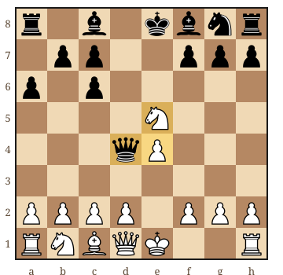
Que se passe-t-il si le cavalier blanc revient en f3 ?
Repérez d’abord les menaces et les cases contrôlées, puis proposez une réponse.
Lire l’analyse de la position
Dans l’exemple 6. Cf3 Dxe4+, les Noirs récupèrent le pion e4 avec échec. Ce n’est pas une démonstration que Cf3 serait le seul coup ; c’est une preuve concrète qu’enlever le défenseur c6 ne suffisait pas à gagner un pion net. Avant Cxe5, il fallait examiner les coups actifs de la dame.
Comparer pour comprendre
Conserver le fou ou échanger en c6 : comparer ce que l’on obtient
Après …a6, le fou b5 doit prendre une décision. Il ne suffit pas de demander quel coup est le plus fréquent : il faut identifier ce que l’on veut conserver et ce que l’on accepte de transformer. Reculer maintient la pièce ; échanger modifie la structure noire et le nombre de fous de chaque camp.
L’atelier compare deux positions obtenues depuis le même départ. Le matériel reste équilibré dans les deux cas. Vous ne cherchez donc pas ici un gain forcé, mais les conséquences d’un choix. C’est une méthode utile pour apprendre une ouverture sans réduire chaque décision à un piège.
Position commune de départ :
1. e4 e5 2. Cf3 Cc6 3. Fb5 a6
Rejouez cette position, puis comparez les suites ci-dessous. Ce sont des exemples commentés : elles ne constituent pas deux recommandations équivalentes ni des coups à reproduire sans calculer.
Fa4 : conserver la pièce et la pression
4. Fa4
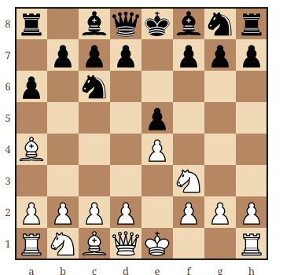
4. Fa4 recule le fou sur la même diagonale vers le cavalier c6. Les Blancs conservent leurs deux fous et les Noirs n’ont pas doublé de pions. Le prix immédiat du recul est un nouveau déplacement d’une pièce déjà développée ; cela peut rester justifié pour garder son potentiel.
Les Noirs peuvent envisager une poussée …b5 dans certaines suites. Avant un autre recul, vérifiez la diagonale disponible et la sécurité du centre. Conserver le fou ne dispense pas de développer le cavalier b1 et le fou c1.
Fxc6 puis …dxc6 : changer la structure
4. Fxc6 dxc6
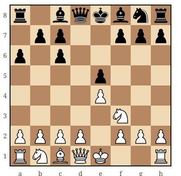
Après 4. Fxc6 dxc6, les Blancs ont échangé un fou contre un cavalier. Les Noirs disposent de pions en c6 et c7, mais gardent les deux fous. Le pion d a quitté d7, ce qui ouvre une diagonale au fou c8 et modifie la colonne d. Ce bilan contient donc des avantages et des contraintes des deux côtés.
Des pions doublés ne sont pas automatiquement perdus. Il faudra pouvoir les attaquer, et tenir compte de l’activité des pièces noires. Inversement, posséder les deux fous ne garantit pas qu’ils auront des diagonales utiles si le centre reste fermé.
Vérifiez votre compréhension
Après Fxc6 et …dxc6, quel camp possède encore deux fous ?
Les Noirs. Les Blancs ont échangé le fou venu de f1 contre le cavalier b8 qui s’était développé en c6.
Le matériel a-t-il changé après cet échange ?
Le nombre de pièces a diminué, mais l’échange fou contre cavalier conserve l’équilibre selon les valeurs habituelles de trois points pour ces pièces. Leur utilité dépend ensuite de la position.
La présence de pions c6 et c7 permet-elle de prendre immédiatement e5 sans calculer ?
Non. Les sorties actives de la dame noire et les menaces sur e4 restent à vérifier. L’autre position commentée de cette page montre précisément ce problème.
À appliquer dans vos parties : Lors de votre prochaine partie d’Espagnole, choisissez le recul ou l’échange en expliquant votre objectif avant de jouer. Après la partie, vérifiez si vous avez utilisé la pièce conservée ou réellement attaqué la structure que vous aviez créée.
Reconnaître les embranchements
Deux variantes à comprendre pour commencer
Ces lignes courtes montrent ce qui change dans le centre et le développement. Rejouez les coups, puis formulez le plan avec vos propres mots ; les réponses adverses peuvent vous amener à une autre position.
La défense Morphy : répondre à …a6
1. e4 e5 2. Cf3 Cc6 3. Fb5 a6 4. Fa4 Cf6
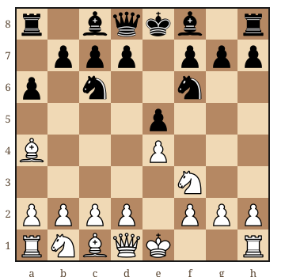
Après 3…a6, le fou recule en a4 pour conserver sa pression sur le cavalier c6. Les Noirs développent ensuite leur cavalier en f6 et attaquent e4. Le recul du fou a donc préservé une idée, mais n’a pas réglé tous les problèmes du centre.
Le plan à comprendre : Le petit roque est un développement naturel à étudier. Ne concluez pas que tout pion e4 attaqué doit être poussé : cherchez aussi l’activité de la tour et les possibilités de récupérer un pion au centre. Les captures doivent être calculées dans leur ordre exact.
La défense berlinoise : …Cf6 sans …a6
1. e4 e5 2. Cf3 Cc6 3. Fb5 Cf6 4. d3 Fc5
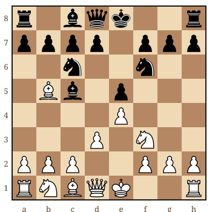
Les Noirs mettent immédiatement e4 sous pression. La réponse 4. d3 le défend sans entrer dans les longues suites où les Blancs roquent et laissent temporairement prendre ce pion.
Le plan à comprendre : Après ce soutien, les Blancs peuvent préparer le roque et le développement du cavalier b1. Le fou b5 vise toujours c6, mais les Noirs n’ont pas avancé le pion a : une même ouverture peut donc laisser des structures différentes à l’aile dame.
Calculer avant de jouer
Piège et vigilance : Échanger le défenseur ne suffit pas à gagner e5
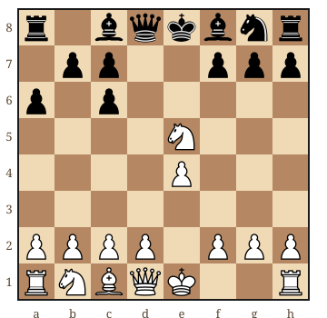
1. e4 e5 2. Cf3 Cc6 3. Fb5 a6 4. Fxc6 dxc6 5. Cxe5
Avant de lire la suite, repérez les échecs, les captures et les pièces attaquées.
Voir la suite et le mécanisme
5… Dd4 6. Cf3 Dxe4+ 7. De2 Dxe2+ 8. Rxe2
Après Cxe5, …Dd4 attaque à la fois le cavalier e5 et le pion e4. Dans la suite montrée, le cavalier revient en f3, puis les Noirs récupèrent e4 avec échec. Les Blancs parent par De2 ; après l’échange des dames et Rxe2, le matériel est égal, mais le roi blanc a perdu le droit de roquer. Le pion gagné n’était donc pas durable, et sa récupération a aussi changé la position du roi.
Comment éviter le problème ou y répondre
Après …dxc6, 5. d3 soutient e4 et permet de préparer le développement. Il n’est pas nécessaire de transformer immédiatement l’échange du cavalier en gain matériel. Repérez les attaques doubles de dame sur votre pièce avancée et votre propre pion central.
Suite de référence à rejouer depuis le début :
1. e4 e5 2. Cf3 Cc6 3. Fb5 a6 4. Fxc6 dxc6 5. d3
Passer de l’ouverture au milieu de partie
Quand les développements essentiels sont accomplis, la question centrale devient souvent de savoir quand jouer d4 et quels échanges accepter. Un centre mobile peut donner de l’espace, mais il faut pouvoir le soutenir. Cherchez d’abord votre pièce la moins active et les menaces réelles, avant une nouvelle poussée.
À l’analyse, vérifiez chaque prise en e5 que vous avez envisagée : le défenseur direct n’est qu’une partie du calcul. Ajoutez les échecs, les attaques de dame et les menaces sur vos propres pions.
Le nom et ses origines
D’où vient le nom « ouverture espagnole » ?
L’appellation Ruy López rend hommage au prêtre espagnol Ruy López de Segura, qui analyse ces positions dans son traité publié en 1561. Le nom « espagnole » renvoie à cette association avec un auteur espagnol.
Ce rôle dans l’analyse et la transmission ne doit pas être transformé en une date de création certaine. Le nom d’une ouverture peut consacrer un analyste plutôt que son premier joueur.
« Espagnole » et « Ruy López » désignent ici la même ouverture. Ce ne sont pas deux répertoires différents.
Les erreurs à éviter dans cette ouverture
Croire le cavalier c6 cloué au roi
Après 3. Fb5, le pion d7 se trouve encore sur la diagonale b5–e8. Le cavalier c6 n’est donc pas cloué au roi dans cette position.
Oublier le fou après …a6
Un pion peut attaquer une pièce même s’il semble loin du centre. Après …a6, vérifiez où votre fou peut aller.
Mémoriser des noms plutôt que des décisions
Commencez par comprendre ce que le fou attaque et ce que …Cf6 menace. Les noms de variantes viendront si vous en avez besoin.
À vous de jouer
Un exercice pour vérifier l’idée
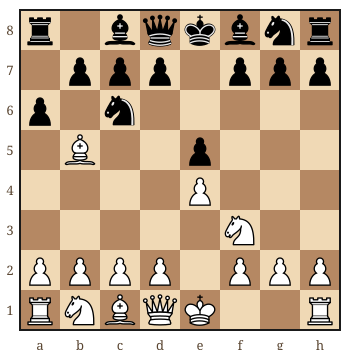
Après …a6, quel recul permet de conserver le fou sur la diagonale a4–e8 ?
Prenez quelques secondes pour choisir et expliquer votre coup.
Voir la réponse expliquée
4. Fa4 conserve le fou et sa diagonale vers le cavalier c6. Ce n’est pas le seul coup légal : Fxc6 constitue un autre choix, avec une autre idée. Ici, l’objectif de l’exercice est de reculer sans échanger.
Votre prochaine séance de pratique
- Rejouez 3. Fb5 puis identifiez le pion qui interrompt sa diagonale vers e8.
- Après …a6, comparez Fa4 et Fxc6 sans poursuivre une longue variante.
- Dans votre prochaine partie, comptez les attaquants et défenseurs avant de prendre e5.
Besoin de comprendre vos propres parties ? Les cours d’échecs permettent de travailler à partir de vos positions.
Quelles ouvertures comparer ensuite ?
- Ouverture italienne : les premiers coups expliqués simplement
Comparer la pression sur c6 au développement du fou en c4.
- Ouverture écossaise : ouvrir le centre avec 3. d4
Observer ce que change une ouverture immédiate du centre.
Retrouver les onze ouvertures et choisir votre prochaine fiche.
Questions fréquentes
Quelle différence entre l’Espagnole et l’Italienne ?
Après 1. e4 e5 2. Cf3 Cc6, les Blancs jouent Fb5 dans l’Espagnole et Fc4 dans l’Italienne. Le fou vise donc le cavalier c6 dans un cas, la diagonale vers f7 dans l’autre.
Pourquoi l’Espagnole s’appelle-t-elle Ruy López ?
Elle porte le nom de Ruy López de Segura, auteur espagnol qui l’a analysée dans son traité de 1561. Cette association explique aussi l’appellation ouverture espagnole.
Faut-il prendre le cavalier c6 tout de suite ?
Non. Les Blancs peuvent conserver leur fou ou l’échanger selon la position. Enlever le défenseur d’e5 ne prouve pas, à lui seul, qu’un pion est gagné.